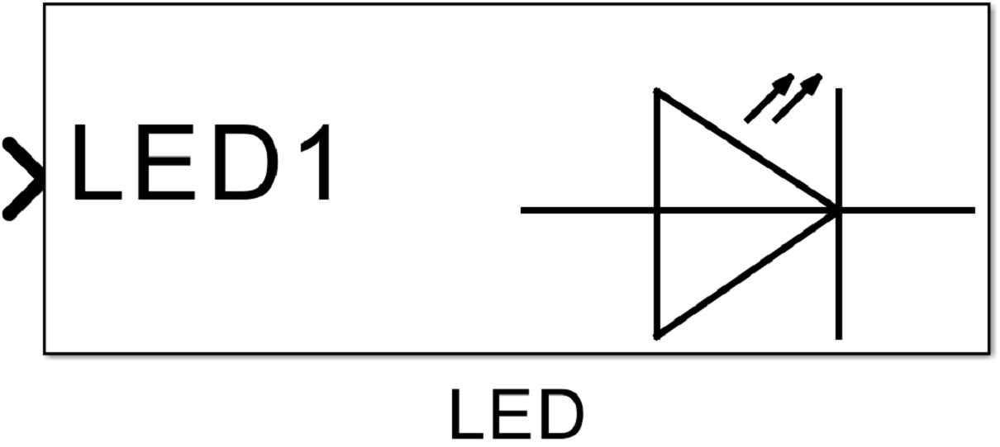
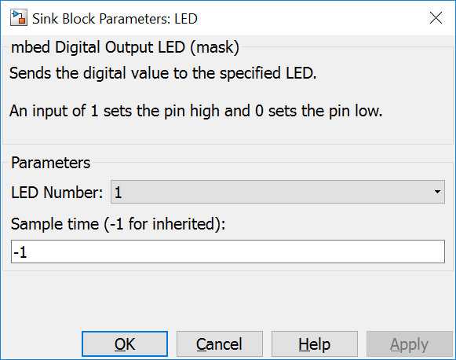
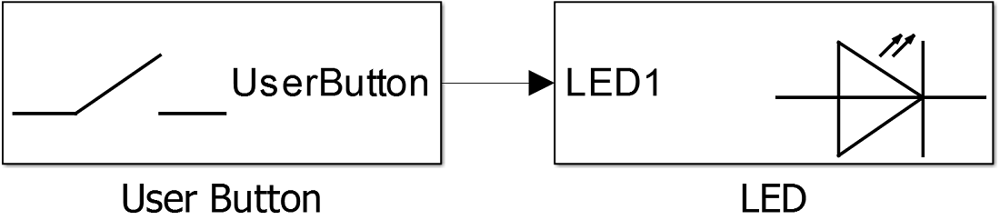

4.4. Digital Output LED
4.4.1. Description
This block writes a digital value to an output pin connected to a LED. The mcu output pin depends on the specific target. LEDs and corresponding pins are defined in PinNames.h.
{kind=link}
4.4.2. Data Type Support
The input port expects an uint8 data type.
4.4.3. Parameters Dialog Box
4.4.3.1. LED Number
specifies the LED. Possible values are LED1, LED2, LED3 and LED4.
4.4.3.2. Sample Time
specifies the time interval between samples. To inherit the sample time, set this parameter to -1.
4.4.4. Example
In the example the mcu pin defined as USER_BUTTON is read in. This vlaue is written to a mcu pin defined as LED1.
{kind=link}
4.4.5. Code Generation
Instance names of mbed classes are created by concatenating model name (, submodelnames) and block name (<Model Name>_(<Subblock Name>_…)<Block Name>). Space and minus characters are substituted by underscore (‘_’) characters.
4.4.5.1. Global parts
creates a global instance
DigitalOut <instance name>(<LED Number>);
in <Model Name>.cpp.
4.4.5.2. Step Function
creates one line in void <Model Name>_step(void) function
<instance name> = ((uint8_T)rvalue);